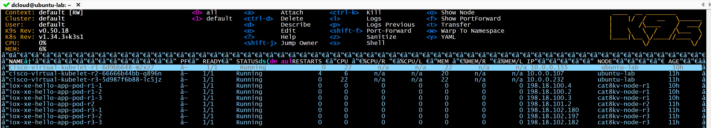

Task 13: Deploy multiple hello-app using Virtual Kubelet¶
Table of Contents¶
- Objective
- Lab Topology and Components
- 1.2 DHCP Server Configuration
- 1.3 Enable RESTCONF and HTTPS Server
- 1.4 Upload Application Image to Router Flash
- Step 2: Kubernetes Manifests Preparation
- 3.2 Virtual Kubelet Deployment
- Step 4: Deploy hello-app Pods on Cat8Kv-task-1
- Step 5: Deploy hello-app Pods on Cat8Kv-task-3
Objective¶
In this task, you will deploy multiple IOS-XE App Hosting applications on Catalyst 8000v (Cat8Kv) routers using Cisco Virtual Kubelet. Kubernetes Pods scheduled to Cat8Kv nodes are instantiated as native App Hosting containers on IOS-XE.
Lab Topology and Components¶
- Kubernetes Node:
ubuntu-lab - Virtual Kubelet Provider: Cisco Virtual Kubelet
-
Routers:
-
cat8kv-task-1(R1) cat8kv-task-3(R3)- Application:
hello-app.iosxe.tar
Step 1: Router Preparation (cat8kv-task-1)¶
1.1 Router Access Details¶
Router: cat8kv-task-1 Management IP: 198.18.1.11
Login to the router using SSH:
ssh admin@198.18.1.11
1.2 DHCP Server Configuration¶
Configure DHCP to support App Hosting networking:
conf t
ip dhcp pool 198_18_100_0
network 198.18.100.0 255.255.255.0
default-router 198.18.100.1
end
1.3 Enable RESTCONF and HTTPS Server¶
Enable RESTCONF and the secure HTTP server (required for Virtual Kubelet communication):
conf t
restconf
ip http secure-server
end
1.4 Upload Application Image to Router Flash¶
From ubuntu-lab, upload the application TAR file to router flash:
scp hello-app.iosxe.tar admin@198.18.1.11:/flash:/hello-app.iosxe.tar
Step 2: Kubernetes Manifests Preparation¶
All Kubernetes YAML files must be created on ubuntu-lab exactly as shown in the following steps.
Step 3: Deploy Virtual Kubelet on Cat8Kv-task-1¶
3.1 VK Device and Node Mapping¶
File: 02_vk_deployment_config_r1.yaml
cat > 02_vk_deployment_config_r1.yaml << 'EOF'
apiVersion: v1
kind: ConfigMap
metadata:
name: vk-config-r1
namespace: default
data:
config.yaml: |
device:
name: cat8kv-router-r1
driver: XE
address: "198.18.6.11"
port: 443
username: admin
password: C1sco12345
tls:
enabled: true
insecureSkipVerify: true
networking:
dhcpEnabled: true
virtualPortGroup: "0"
defaultVRF: ""
kubelet:
node_name: "cat8kv-node-r1"
namespace: ""
update_interval: "30s"
os: "Linux"
node_internal_ip: "198.18.6.11"
EOF
Apply the configuration:
kubectl apply -f 02_vk_deployment_config_r1.yaml
Expected Output:
configmap/vk-config-r1 created
3.2 Virtual Kubelet Deployment¶
File: 03_vk_deployment-r1.yaml
cat > 03_vk_deployment-r1.yaml << 'EOF'
apiVersion: apps/v1
kind: Deployment
metadata:
name: cisco-virtual-kubelet-r1
namespace: default
labels:
app: cisco-virtual-kubelet-r1
spec:
replicas: 1
selector:
matchLabels:
app: cisco-virtual-kubelet-r1
template:
metadata:
labels:
app: cisco-virtual-kubelet-r1
spec:
nodeSelector:
kubernetes.io/hostname: ubuntu-lab
containers:
- name: virtual-kubelet
image: containers.dmz.cisco.com:5000/cisco-virtual-kubelet:1.0.0
env:
- name: KUBECONFIG
value: "/etc/kubernetes/kubeconfig.yaml"
volumeMounts:
- name: kubeconfig-storage
mountPath: "/etc/kubernetes"
readOnly: true
- name: vk-config-storage
mountPath: "/etc/virtual-kubelet"
readOnly: true
volumes:
- name: kubeconfig-storage
configMap:
name: remote-kubeconfig
items:
- key: "config"
path: "kubeconfig.yaml"
- name: vk-config-storage
configMap:
name: vk-config-r1
items:
- key: "config.yaml"
path: "config.yaml"
EOF
Apply the deployment:
kubectl apply -f 03_vk_deployment-r1.yaml
Expected Output:
deployment.apps/cisco-virtual-kubelet-r1 created
Step 4: Deploy hello-app Pods on Cat8Kv-task-1¶
File: 04_vk_pod_hello-app-r1.yaml
cat > 04_vk_pod_hello-app-r1.yaml << 'EOF'
apiVersion: v1
kind: Pod
metadata:
name: iox-xe-hello-app-pod-r1-1
namespace: default
spec:
nodeName: cat8kv-node-r1
containers:
- name: test-app
image: flash:/hello-app.iosxe.tar
resources:
requests:
memory: "4Mi"
cpu: "50m"
limits:
memory: "8Mi"
cpu: "75m"
---
apiVersion: v1
kind: Pod
metadata:
name: iox-xe-hello-app-pod-r1-2
namespace: default
spec:
nodeName: cat8kv-node-r1
containers:
- name: test-app
image: flash:/hello-app.iosxe.tar
resources:
requests:
memory: "4Mi"
cpu: "50m"
limits:
memory: "8Mi"
cpu: "75m"
---
apiVersion: v1
kind: Pod
metadata:
name: iox-xe-hello-app-pod-r1-3
namespace: default
spec:
nodeName: cat8kv-node-r1
containers:
- name: test-app
image: flash:/hello-app.iosxe.tar
resources:
requests:
memory: "4Mi"
cpu: "50m"
limits:
memory: "8Mi"
cpu: "75m"
EOF
Apply the pods:
kubectl apply -f 04_vk_pod_hello-app-r1.yaml
Expected Output:
pod/iox-xe-hello-app-pod-r1-1 created
pod/iox-xe-hello-app-pod-r1-2 created
pod/iox-xe-hello-app-pod-r1-3 created
Step 5: Deploy additional hello-app Pods on Cat8Kv-task-3¶
Update the file 04_vk_pod_hello-app-r3.yaml with additional Pods targeting cat8kv-node-r3:
nano 04_vk_pod_hello-app-r3.yaml
apiVersion: v1
kind: Pod
metadata:
name: iox-xe-hello-app-pod-r3-1
namespace: default
spec:
nodeName: cat8kv-node-r3
containers:
- name: test-app
image: flash:/hello-app.iosxe.tar
resources:
requests:
memory: "4Mi"
cpu: "50m"
limits:
memory: "8Mi"
cpu: "75m"
---
apiVersion: v1
kind: Pod
metadata:
name: iox-xe-hello-app-pod-r3-2
namespace: default
spec:
nodeName: cat8kv-node-r3
containers:
- name: test-app
image: flash:/hello-app.iosxe.tar
resources:
requests:
memory: "4Mi"
cpu: "50m"
limits:
memory: "8Mi"
cpu: "75m"
---
apiVersion: v1
kind: Pod
metadata:
name: iox-xe-hello-app-pod-r3-3
namespace: default
spec:
nodeName: cat8kv-node-r3
containers:
- name: test-app
image: flash:/hello-app.iosxe.tar
resources:
requests:
memory: "4Mi"
cpu: "50m"
limits:
memory: "8Mi"
cpu: "75m"
Apply the pods:
kubectl apply -f 04_vk_pod_hello-app-r3.yaml
Expected Output:
pod/iox-xe-hello-app-pod-r3-1 created
pod/iox-xe-hello-app-pod-r3-2 created
pod/iox-xe-hello-app-pod-r3-3 created
Step 6: Monitor Deployments and Pods using k9s¶
In this step, you will use k9s to visually monitor the status of Virtual Kubelet deployments and IOS-XE App Hosting Pods mapped to Cat8Kv routers.
This provides real-time visibility into:
- Virtual Kubelet health
- Pod scheduling to Cat8Kv nodes
- Pod runtime state and IP allocation
6.1 Launch k9s¶
From ubuntu-lab, launch k9s:
k9s
Ensure the following context:
- Cluster: default
- Namespace: default
If required, switch namespace inside k9s:
:ns
Select default.
6.2 Verify Virtual Kubelet Deployments¶
Inside k9s:
- Press
:deploy - Verify the following deployments are in READY state:
cisco-virtual-kubelet-r1
cisco-virtual-kubelet-r2
cisco-virtual-kubelet-r3
Each Virtual Kubelet should show:
READY: 1/1STATUS: Running- Scheduled on node:
ubuntu-lab
6.3 Verify hello-app Pods on Cat8Kv Nodes¶
Inside k9s:
- Press
:poto view Pods - Confirm the following Pods are Running and mapped to Cat8Kv nodes:
iox-xe-hello-app-pod-r1-* → cat8kv-node-r1
iox-xe-hello-app-pod-r2-* → cat8kv-node-r2
iox-xe-hello-app-pod-r3-* → cat8kv-node-r3
Each Pod should display:
READY: 1/1STATUS: Running- A valid IP from the App Hosting DHCP pool
6.4 Sample k9s Output (Pods View)¶
The following sample output shows Virtual Kubelet deployments and hello-app Pods running across Cat8Kv routers:
NAME READY STATUS RESTARTS IP NODE AGE
cisco-virtual-kubelet-r1-* 1/1 Running 0 10.0.0.155 ubuntu-lab 10h
cisco-virtual-kubelet-r2-* 1/1 Running 4 10.0.0.107 ubuntu-lab 11h
cisco-virtual-kubelet-r3-* 1/1 Running 0 10.0.0.232 ubuntu-lab 10h
iox-xe-hello-app-pod-r1-1 1/1 Running 0 198.18.100.4 cat8kv-node-r1 10h
iox-xe-hello-app-pod-r1-2 1/1 Running 0 198.18.100.2 cat8kv-node-r1 10h
iox-xe-hello-app-pod-r1-3 1/1 Running 0 198.18.100.3 cat8kv-node-r1 10h
iox-xe-hello-app-pod-r2 1/1 Running 0 198.18.101.2 cat8kv-node-r2 10h
iox-xe-hello-app-pod-r3-1 1/1 Running 0 198.18.102.180 cat8kv-node-r3 10h
iox-xe-hello-app-pod-r3-2 1/1 Running 0 198.18.102.197 cat8kv-node-r3 10h
iox-xe-hello-app-pod-r3-3 1/1 Running 0 198.18.102.182 cat8kv-node-r3 10h

¶6.5 Useful k9s Shortcuts (Optional)¶
| Key | Action |
|---|---|
:po |
View Pods |
:deploy |
View Deployments |
d |
Describe selected resource |
l |
View logs |
s |
Open shell (if supported) |
q |
Quit k9s |
✔️ At this point, you have end-to-end visibility of IOS-XE App Hosting workloads scheduled via Kubernetes and executed natively on Cat8Kv routers using Cisco Virtual Kubelet.